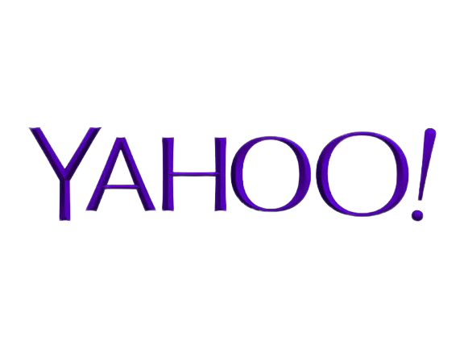
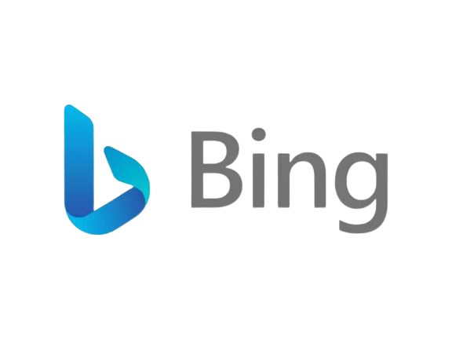
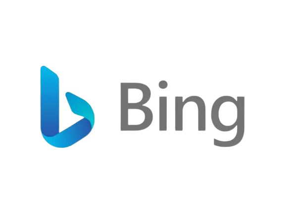

Link Search Engine :
 

Disini kalian tinggal klik tulisan yang berupa link untuk menuju halaman yang di inginkan, saya akan cantumkan link yang sama dengan image link di atas namun hanya dalam bentuk tulisan saja sebagai berikut:
Saya memiliki 4 ekor kambing di rumah setiap harinya saya beri makan rumput dari hasil ngarit di tanah lapang, moment saya merawat kambing - kambing saya sering bagikan di akun Instagram saya. Jika kalian tertarik kalian bisa follow akun saya, saya upload setiap hari mengenai tips - tips seputar ternak yang mungkin bermanfaat bagi teman - teman yang memiliki hewan ternak sebagai peliharaan.
Akhir - akhir ini saya sering baca berita di koran harian kompas dimana setiap minggunya pasti ada berita tentang politik karena menjelang pilpres 2024 yang kurang lebih dilaksanakan 3 bulan lagi dari sekarang 14 November. Semakin hari menurut saya semakin memanas dan lama - lama seperti tidak masuk akal, praktek - praktek yang dilarang dalam berpolitik justru dipertontonkan dengan jelas menurut pengamat politik tentu saja. Karena saya sejatinya bukan siapa - siapa bahkan tidak memiliki disiplin ilmu apapun, namun saya senang membagikan pikiran - pikiran saya di akun Twitter saya berupa tulisan. Karena bagi saya, lebih mudah meng-ekspresikan pikiran lewat tulisan di banding buat foto maupun video. Kalian bisa lihat profil saya melalui link yang sudah saya cantumkan, kita bisa saling tukar pikiran terkait isu - isu yang sedang memanas contohnya seperti sekarang ini, bisa diawali dengan mutualan dulu.
Zaman sekarang video menjadi media paling pesat perkembangannya dalam penyampain informasi terutama di YouTube dan TikTok, banyak platform baru bermunculan dengan konsep yang hampir serupa ada creator dan ada viewer dengan sistem follow or subcribe gratis dan terdapat fitur gift, superthanks sejenisnya adalah cara viewer yang ingin memberikan apresiasi atas konten yang dibuat creator secara sukarela karena mungkin memberikan impact positif terhadap hidup mereka.
Saya baru tahu ternyata search engine di bumi ini bukan hanya satu, namun ada Yahoo dan Bing. Yah memang 2 tersebut kurang terkenal atau memang kita dari kecil terutama gen Z terbiasa dengan Google atau persaingan memang terlampau jauh aku juga kurang paham, tapi di gadang - gadang saham bing akan melampaui google dengan tehknologi AI but who know. Kita sebagai pengguna gunakan yang memang meningkatkan produktivitas hanya itu yang kita mau.
Link pertama yang akan saya style menjadi tombol adalah Twitter baru selanjutnya Instagram, dan yang ketiga link YouTube platform video pioner dan paling populer sebagai lapangan pekerjaan menjadi seorang creator.
Selanjutnya persaingan ada di bidang Search Engine. Disana ada Bing.com yang sangat jarang atau bahkan belum pernah menggunakannya.
Kemudian Yahoo.com mungkin sebagian dari kita pernah mendengar atau melihat logonya sekali dan yang terakhir sekaligus penguasa pasar dengan nilai saham paling tinggi yaitu kita tahu bersama Google.com